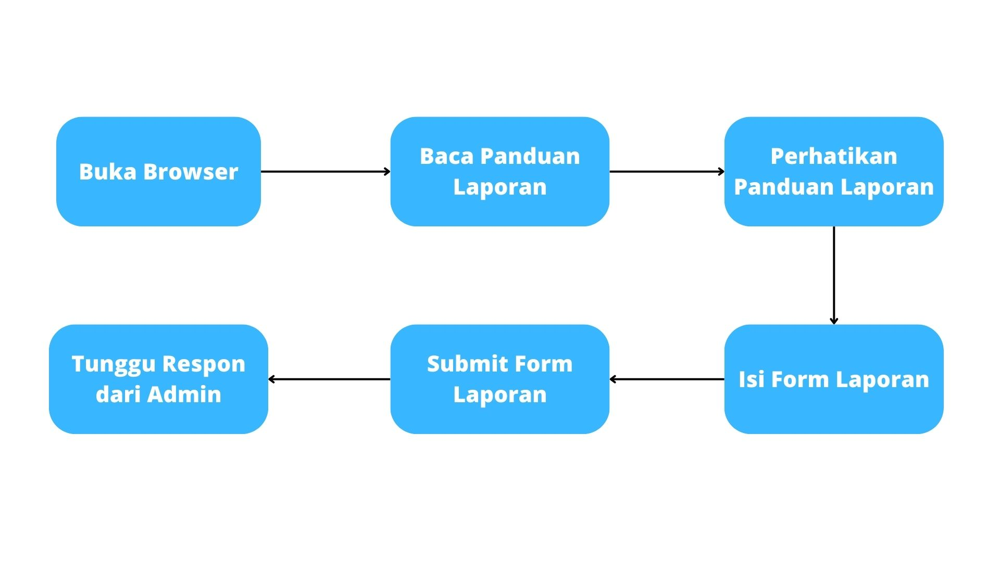

Cara Melapor

Klik menu "Lapor" untuk merekam pengaduan baru.
Isi form Tambah Pengaduan sesuai informasi yang Anda ketahui.
-
Perhatikan beberapa hal di bawah ini :
- Semua kotak yang ada wajib diisi.
- Pastikan informasi yang diberikan sedapat mungkin memenuhi unsur 4W 1H. -
Setelah selesai mengisi, silakan klik tombol "Kirim Pengaduan" untuk melanjutkan proses pelaporan Anda.
-
Catat dan Simpan dengan baik nomor pengaduan yang Anda peroleh saat membuat pengaduan untuk mengetahui status/tindak lanjut pengaduan yang Anda sampaikan.
-
Dinsosdaldukkbp3a Purbalingga akan menghubungi Anda melalui saluran yang telah Anda cantumkan dalam form pengaduan apabila pengaduan yang Anda sampaikan belum memenuhi kriteria untuk ditindaklanjuti.